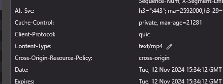

| Ник | Пост | Дата |
|---|---|---|
| mazinilya(Mazinilya) | Решил я потыкать в настройках кое что так как при просмотре трансляций на запрете все равно идет отставание от стрима то есть красная лампочка горит серым вместо красного Зашел я в настройки своего браузера и включил все по стандарту раньше было так включено для того же DPI Выключил их на стандарт и все так же запрет работает А вообще их надо выключать для запрета на Disabled? или это только для DPI нужно было Просто разницы не заметил | 2024-11-12T15:21:03.230Z |
| censorliber | Не надо ничего отключать и включать. Всё работает по умолчанию. | 2024-11-12T15:22:32.187Z |
| censorliber | QUIC лучше даже включить, может быть быстрее будет интерфейс ютуба грузить. Но не факт. | 2024-11-12T15:23:52.533Z |
| mazinilya(Mazinilya) | Ну то что на картинке это было настроено для GoodbyeDPI так как без этого не работает Сейчас же перешел на запрет и решил поставить настройки как были раньше до всего этого Это в теории может помочь с тем что трансляция отстает? когда смотрю стримы | 2024-11-12T15:25:02.493Z |
| censorliber |
Я могу быть не прав, но вроде бы трафик трансляций ютуба идёт через протокол RTMP, который построен на TCP. В таком случае QUIC ни на что не повлияет. Kyber TLS вообще с трансляциями не связан. Хотя если они работают через QUIC, лучше включить - тут только смотреть как у Вас работает. Возможно в редких случаях отключение | 2024-11-12T15:32:06.868Z |
| mazinilya(Mazinilya) | Ну такая вещь с отставанием трансляции началась где то в начале месяца до этого все хорошо было | 2024-11-12T15:33:18.209Z |
| censorliber | Я вас обманул, трансляции идут через QUIC. Включайте его и будет вам счастье  | 2024-11-12T15:35:27.093Z |
| mazinilya(Mazinilya) | Хорошо потом посмотрю что будет так как я не могу просто включить рандомный стрим и проверить Эта вещь работает рандомно например может отставать а потом раз и все при чем это на одном и том же стриме Так что когда тот же самый стример запустит трансляцию там и проверю | 2024-11-12T15:37:55.539Z |
| SagePtr(Sage Pointer) |
GoodbyeDPI не дружит ни с QUIC, ни с Kyber, потому для него и нужно было отключать. Но Zapret прекрасно дружит и с тем, и другим, потому лучше поставить настройки по дефолту, как было до этого. QUIC ускоряет, но не на всех серверах он есть. | 2024-11-12T16:25:05.181Z |
| KDS | Плюсадин. Не надо ничего трогать, все по дефолту | 2024-11-12T18:12:34.041Z |
| mazinilya(Mazinilya) | Отставание все так же есть но это не прям критично главное что вообще работает | 2024-11-13T11:54:56.576Z |
{kind=link}